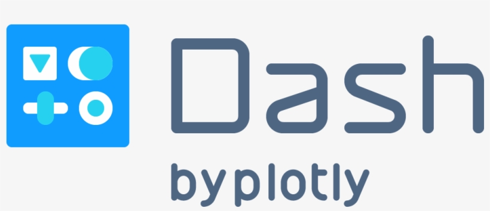
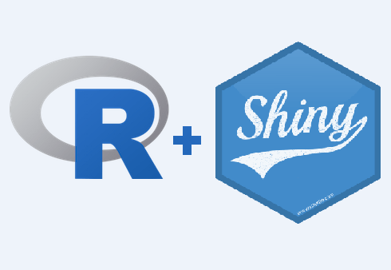

EAGA - BLog
Bienvenidos a mi blog en este apartado comentaré algunas de mis experiencias y vivencias dentro del área de tecnología, de la misma forma documentaré el desarrollo de diversos proyectos y buenas prácticas en diversas herramientas tecnológicas

Setup 101 y Configuración Apache Cordova
Instalación y Configuración del entorno para desarrollo con Apache Cordova.
Leer Más →


Configuración Inicial
Repaso sobre la configuración básica de una maquina de practica o pruebas.
Leer Más →

Instalación y Programación en R con RStudio
Breve introducción a la programación en R con Rstudio.
Leer Más →